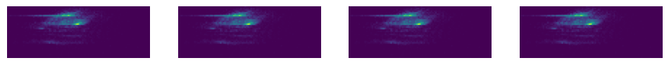
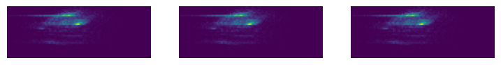
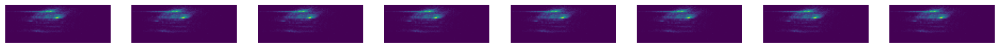
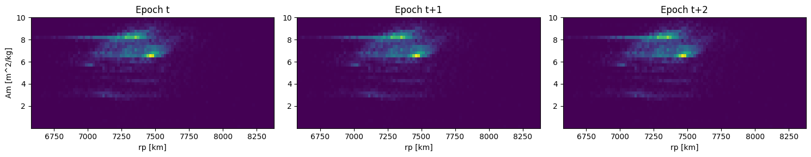
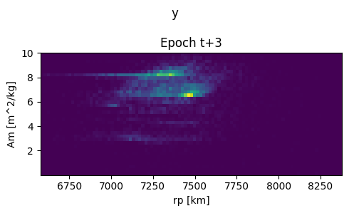
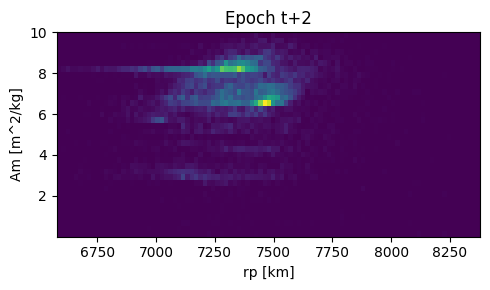
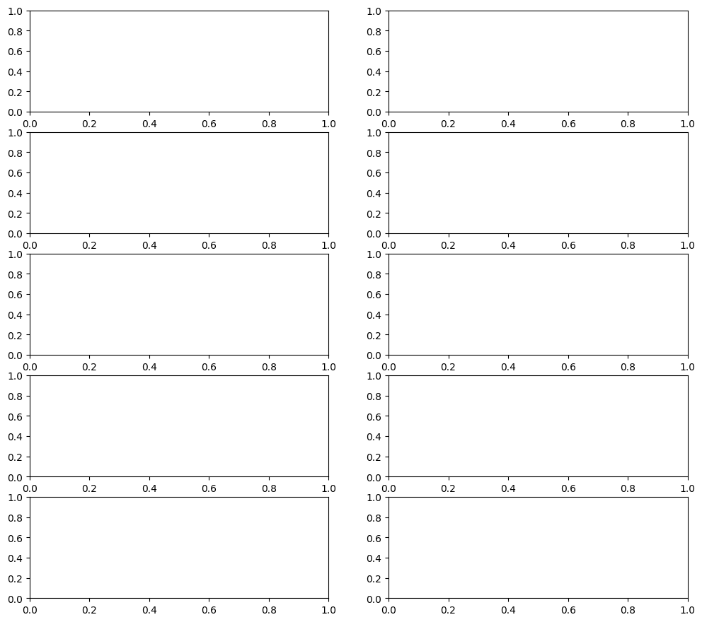
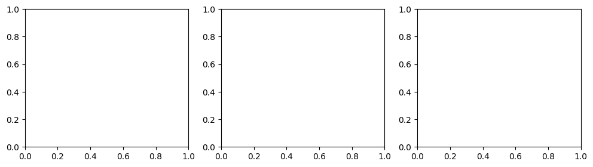
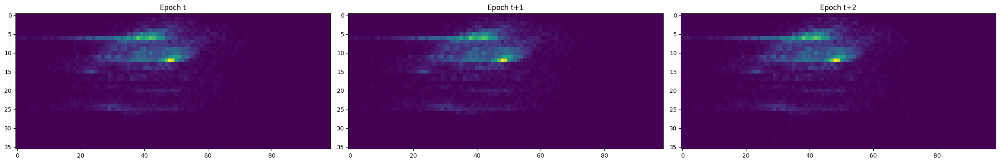

# Test
data = np.random.rand(100, 3, 10)
X, y = apply_sliding_window_3d(data, window_len=4, horizon=1, seq_first=False,
stride=None)
test_eq(X.shape, (200, 3, 4))
test_eq(y.shape, (200, 3, 1))Data
Functions related to data processing in MOCATML
apply_sliding_window_3d
apply_sliding_window_3d (data, window_len, stride:Optional[int]=1, start:int=0, pad_remainder:bool=False, padding:str='post', padding_value:float=nan, add_padding_feature:bool=True, get_x:Union[NoneType,int,list]=None, get_y:Union[NoneType,int,list]=None, y_func:Optional[<built- infunctioncallable>]=None, output_processor:Optional[<built- infunctioncallable>]=None, copy:bool=False, horizon:Union[int,list]=1, seq_first:bool=True, sort_by:Optional[list]=None, ascending:bool=True, check_leakage:bool=True)
Apply sliding window to 3D data. The data is assumed to have the shape (n_samples, n_features, n_time_steps). Input: data: 3D array window_len: int, length of the sliding window horizon: int, number of time steps to predict kwargs: additional arguments to SlidingWindow Output: X: 3D array, shape (n_samples, n_features, window_len) y: 3D array, shape (n_samples, n_features, horizon)
| Type | Default | Details | |
|---|---|---|---|
| data | |||
| window_len | int | length of lookback window | |
| stride | Union[None, int] | 1 | n datapoints the window is moved ahead along the sequence. Default: 1. If None, stride=window_len (no overlap) |
| start | int | 0 | determines the step where the first window is applied: 0 (default) or a given step (int). Previous steps will be discarded. |
| pad_remainder | bool | False | allows to pad remainder subsequences when the sliding window is applied and get_y == [] (unlabeled data). |
| padding | str | post | ‘pre’ or ‘post’ (optional, defaults to ‘pre’): pad either before or after each sequence. If pad_remainder == False, it indicates the starting point to create the sequence (‘pre’ from the end, and ‘post’ from the beginning) |
| padding_value | float | nan | value (float) that will be used for padding. Default: np.nan |
| add_padding_feature | bool | True | add an additional feature indicating whether each timestep is padded (1) or not (0). |
| get_x | Union[None, int, list] | None | indices of columns that contain the independent variable (xs). If None, all data will be used as x. |
| get_y | Union[None, int, list] | None | indices of columns that contain the target (ys). If None, all data will be used as y. [] means no y data is created (unlabeled data). |
| y_func | Optional[callable] | None | optional function to calculate the ys based on the get_y col/s and each y sub-window. y_func must be a function applied to axis=1! |
| output_processor | Optional[callable] | None | optional function to process the final output (X (and y if available)). This is useful when some values need to be removed.The function should take X and y (even if it’s None) as arguments. |
| copy | bool | False | copy the original object to avoid changes in it. |
| horizon | Union[int, list] | 1 | number of future datapoints to predict (y). If get_y is [] horizon will be set to 0. |
| seq_first | bool | True | True if input shape (seq_len, n_vars), False if input shape (n_vars, seq_len) |
| sort_by | Optional[list] | None | column/s used for sorting the array in ascending order |
| ascending | bool | True | used in sorting |
| check_leakage | bool | True | checks if there’s leakage in the output between X and y |
DensityData
DensityData (data, lbk, h, gap=0)
Args: data: The data containing sequences of heatmaps. Shape should be (n_samples, lookback+horizon+gap, height, width). lbk: Number of input frames to use as history (lookback). h: Number of output frames to forecast (horizon).
# Test
default_device(False)
# NOTE: This is only going to take the first 10 elements for each simulation
data = np_load_compressed('TLE_density_10_15x15.npy.gz', path='../example_data')
lbk = 3
h = 1
ds = DensityData(data, lbk=lbk, h=h)
x, y = ds[0]
test_eq(x.shape, (lbk, 1, 36, 99))
test_eq(y.shape, (h, 1, 36, 99))
z = torch.cat([x, y], dim=0)
show_images(z)
# with gap
lbk = 2
h = 1
gap = 1
ds2 = DensityData(data, lbk=lbk, h=h, gap=gap)
x, y = ds2[0]
test_eq(x.shape, (lbk, 1, 36, 99))
test_eq(y.shape, (h, 1, 36, 99))
z = torch.cat([x, y], dim=0)
show_images(z)
# try negative gaps
lbk = 4
h = 4
gap = -3
ds3 = DensityData(data, lbk=lbk, h=h, gap=gap)
x, y = ds3[0]
test_eq(x.shape, (lbk, 1, 36, 99))
test_eq(y.shape, (h, 1, 36, 99))
test_eq(x[1:], y[:-1])
z = torch.cat([x, y], dim=0)
show_images(z)
# If you want a fixed one
ds_fixed = [ds[i] for i in range(2)]As a Transform
Refactor into fastai compatible transform
DensitySeq
DensitySeq (x=None, *rest)
A tuple with elementwise ops and more friendly init behavior
x,y = ds[0]
DensitySeq.create(x).show(figsize=(5,3), x_disc=RP_DISC, y_disc=AM_DISC)
DensitySeq.create(y).show(figsize=(5,3), start_epoch=3, x_disc=RP_DISC,
y_disc=AM_DISC, title="y")[<Axes: title={'center': 'Epoch t+3'}, xlabel='rp [km]', ylabel='Am [m^2/kg]'>]

# Try only some indices
DensitySeq.create(x).show(figsize=(5,3), x_disc=RP_DISC, y_disc=AM_DISC, epochs=[2])[<Axes: title={'center': 'Epoch t+2'}, xlabel='rp [km]', ylabel='Am [m^2/kg]'>]
# Try creating from preds of 10 elements with horizon 4
h = 4
preds = tuple(torch.rand(10, 1, 36, 99) for _ in range(h))
p0 = DensitySeq.from_preds_or_targs(preds, idx=0)
test_eq(len(p0), h)
test_eq(p0[0].shape, (1, 36, 99))
p0_array = DensitySeq.from_preds_or_targs(preds, idx=0, to_array=True)
test_eq(toarray(p0), p0_array)# Convert back to preds
p0_preds = p0.to_preds_or_targs()
test_eq(len(p0_preds), h)
test_eq(p0_preds[0].shape, (1, 1, 36, 99))
for i in range(h):
test_eq(p0_preds[i][0], preds[i][0])
# With array too
p0_preds_array = p0_array.to_preds_or_targs()
test_eq(len(p0_preds_array), h)
test_eq(p0_preds_array[0].shape, (1, 1, 36, 99))
for i in range(h):
test_eq(p0_preds_array[i][0], toarray(preds[i][0]))DensityTupleTransform
DensityTupleTransform (ds)
Delegates (__call__,decode,setup) to (encodes,decodes,setups) if split_idx matches
train_tl = TfmdLists([0,1,2,3,4], DensityTupleTransform(ds))
valid_tl = TfmdLists([5,6,7,8,9], DensityTupleTransform(ds))b = train_tl[0]
explode_types(b){tuple: [{__main__.DensitySeq: [torch.Tensor, torch.Tensor, torch.Tensor]},
{__main__.DensitySeq: [torch.Tensor]}]}dls = DataLoaders.from_dsets(train_tl, valid_tl, bs=5).to(default_device())b = dls.one_batch()
explode_types(b){tuple: [{__main__.DensitySeq: [torch.Tensor, torch.Tensor, torch.Tensor]},
{__main__.DensitySeq: [torch.Tensor]}]}b[0][0].shapetorch.Size([5, 1, 36, 99])dls.show_batch()AttributeError: AxesImage.set() got an unexpected keyword argument 'ctx'

show_density_forecast
show_density_forecast (p, idx, figsize=(8, 4), **kwargs)
Show predictions given as a list of tensors. Args: p: list of tensors, each tensor is a prediction of shape (n_samples, n_channels, height, width) idx: int, index of the sample to show
# test
show_density_forecast(b[0], 0)